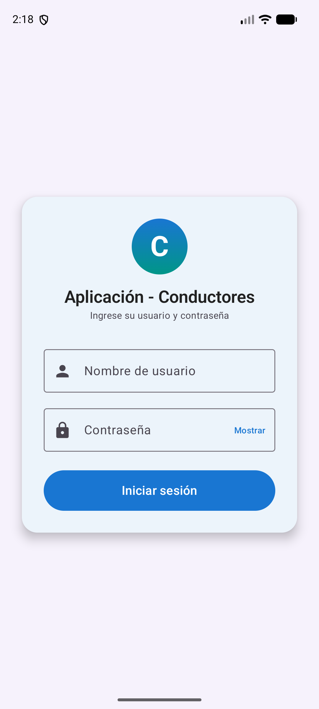
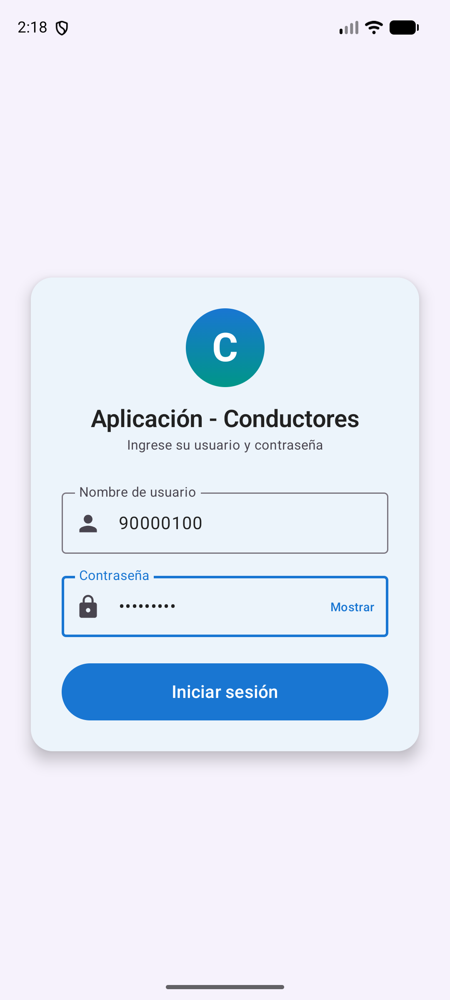
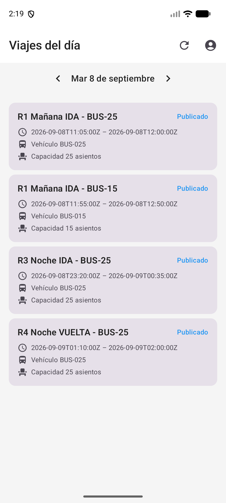
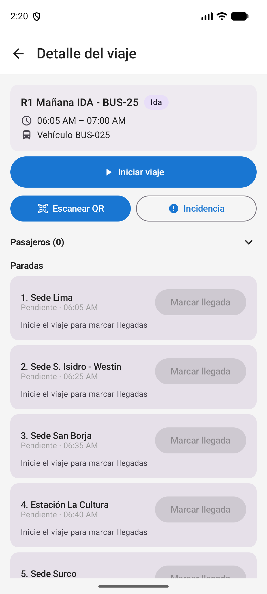
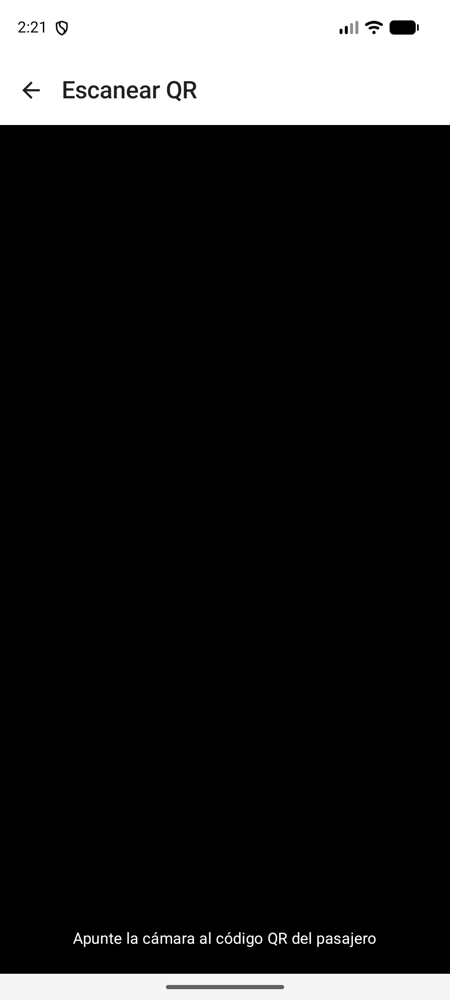
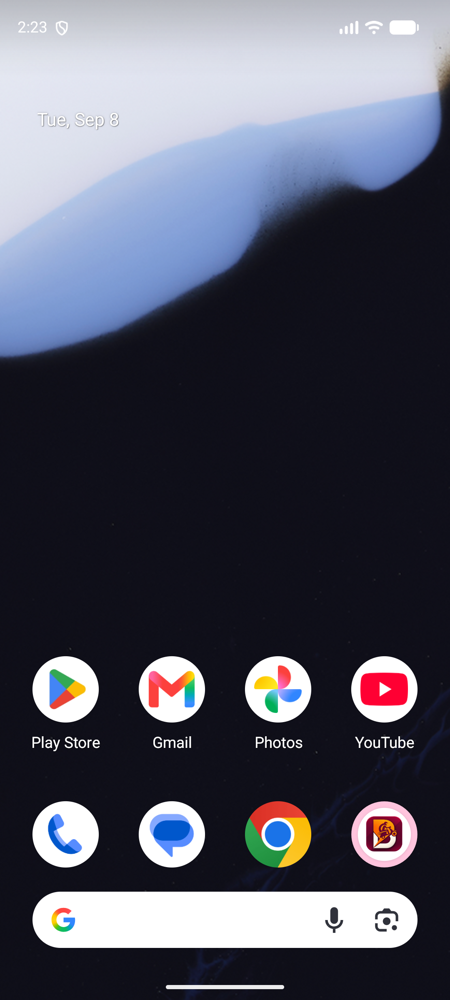
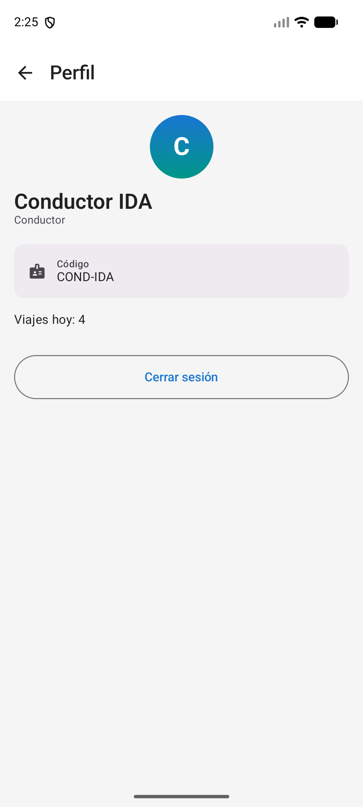
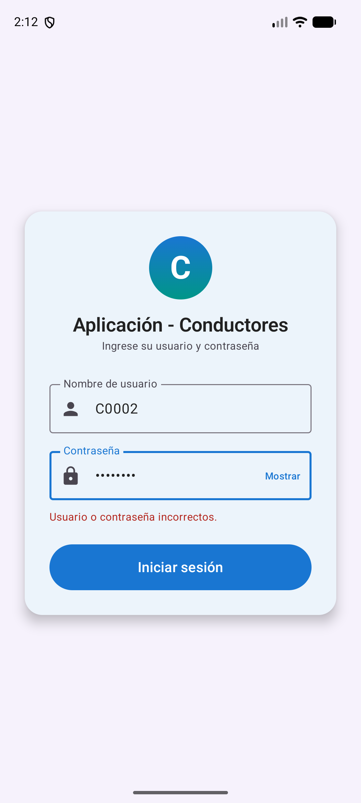

Guía paso a paso para usar la app desde tu celular
Es la herramienta que te ayuda a gestionar los viajes de transporte desde tu celular. Con esta app podés:
Para empezar a usar la app necesitás:
La primera vez que abras la app, el celular te va a preguntar si le das permiso para usar la cámara y para saber dónde estás. Decí que Sí a los dos pedidos.
Cuando abrís la aplicación por primera vez ves la pantalla de bienvenida. En la parte de arriba dice "Aplicación - Conductores".
El cartel grande te pide que ingreses tu usuario y contraseña para empezar a usar la app.


Después de iniciar sesión, la app te lleva a la pantalla principal llamada "Viajes del día". Acá ves todos los viajes que tenés asignados para la fecha actual.

Arriba a la derecha tenés dos botones muy útiles:
Cada viaje de la lista muestra:
Cuando tocás un viaje de la lista, la app abre la pantalla "Detalle del viaje". Acá tenés toda la información del viaje seleccionado.
Arriba a la izquierda tenés la flecha "Volver" para regresar a la lista de viajes del día.

En la parte superior de la pantalla ves el nombre del viaje, el sentido (Ida o Vuelta), el horario, el vehículo y tres botones de acción:
Más abajo aparece "Pasajeros (0)" indicando cuántos pasajeros tienen reserva para este viaje, y después la lista de paradas:
Cuando llegás a una parada, tenés que avisarle a la app para que registre la hora real en la que llegaste.
Una vez confirmada, la parada cambia de estado a "Completada" y la app guarda la hora exacta en la que llegaste. Esto es importante porque después se usa para calcular si el viaje va bien de tiempo o si hubo demoras.
Cuando un pasajero sube al vehículo, te muestra un código QR en su celular (es la confirmación de su reserva). Con esta app podés escanearlo para confirmar que subió.

Las opciones que aparecen según el caso son:
Si durante el viaje pasa algo fuera de lo normal (un desperfecto mecánico, un accidente, un pasajero que se sintió mal, etc.) tenés que dejar registro en la app.

Para ver tus datos personales (nombre, código de empleado, cantidad de viajes del día) tocá el ícono de la persona que está arriba a la derecha en la pantalla principal.

Se abre la pantalla "Perfil" con toda tu información:
Arriba a la izquierda tenés la flecha "Volver" para regresar a la lista de viajes.
Abajo está el botón "Cerrar sesión" que se explica en el siguiente paso.
Cuando termines tu jornada, cerrá la sesión para que nadie más pueda entrar con tu usuario.
Volvés a la pantalla de inicio. La próxima vez que abras la app te va a pedir usuario y contraseña otra vez.
"Usuario o contraseña incorrectos"
Revisá que estés escribiendo bien tu usuario y contraseña. Si te equivocaste, la app te deja volver a intentarlo las veces que necesites.

"Complete el usuario y la contraseña"
Aparece cuando falta completar alguno de los dos campos. Tocalos y escribí lo que falta.
La cámara no se abre para escanear QR
Puede ser que le hayas negado el permiso a la app. Andá a Configuración > Aplicaciones > Conductor > Permisos y activá el permiso de cámara. Después volvé a la app y reintentá.
No me deja escanear un QR (no aparece)
Asegurate de que el QR esté bien iluminado y que la cámara lo enfoque derecho. A veces pasa que el QR está muy chico en la pantalla o muy lejos. Pedile al pasajero que lo agrande.
La app se queda cargando o no muestra los viajes
Verificá que tengas internet (datos móviles o Wi-Fi). Si la señal es mala, esperá unos segundos y tocá el botón "Actualizar" arriba a la derecha (la flecha circular).
No puedo marcar la llegada a una parada
Esto puede pasar si todavía no iniciaste el viaje. Tocá primero el botón "Iniciar viaje" en la parte superior del detalle, y después intentá marcar la llegada.
¿Otro problema?
Si la app no responde, se cierra sola o te muestra un error que no entendés, comunicate con el área de soporte. Es importante que tengas la última versión de la aplicación instalada.